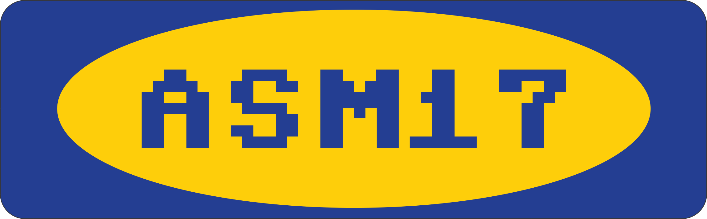

<!doctype html>
<html>
	<head>
		<meta charset="utf-8">
		<meta name="viewport" content="width=device-width, initial-scale=1.0, maximum-scale=1.0, user-scalable=no">

		<title>reveal.js</title>

		<link rel="stylesheet" href="css/reveal.css">
		<link rel="stylesheet" href="css/theme/blood.css">

		<!-- Theme used for syntax highlighting of code -->
		<link rel="stylesheet" href="lib/css/zenburn.css">

		<!-- Printing and PDF exports -->
		<script>
			var link = document.createElement( 'link' );
			link.rel = 'stylesheet';
			link.type = 'text/css';
			link.href = window.location.search.match( /print-pdf/gi ) ? 'css/print/pdf.css' : 'css/print/paper.css';
			document.getElementsByTagName( 'head' )[0].appendChild( link );
		</script>
	</head>
	<body>
		<div class="reveal">
			<div class="slides">
			<!--<section>
				<canvas id="canvas" width="128" height="128" style="background-color: white;"></canvas>
				
				<div style="display: none;">
					
				</div>

				<script>
					window.onload = function () {
						canvas = document.getElementById("canvas");
						ctx = canvas.getContext("2d");
						// document.addEventListener("keydown", keyPush);
						// document.addEventListener("mousemove")
						setInterval(update, 1000 / 15);
					}

					function update() {
						canvas.width = window.innerWidth;
						canvas.height = window.innerHeight;

						ctx.drawImage("character", 0, 0, 100, 100);
					}
				</script>
			</section>-->
				<section data-markdown><script type="text/template">
				workshop
				# gamedev 101
				
				</script></section>

				<section data-markdown><script type="text/template">
				# fahrplan
				- about
				- fahrplan2: was tun?
				- industrie heute
				- industrie zukunft
				- status quo: tools & tricks
				- tun!
				</script></section>
				

				<section>
					<section data-markdown><script type="text/template">
					# about
					- roboto aka [@wroboto_t](https://twitter.com/wroboto_t)
					- vr/ar/mr dev (Innoactive)
					- 2y+ gamedev 
					</script></section>
					
					<section data-markdown><script type="text/template">
					# hbu?
					- was habt ihr schon so gemacht?
					- programieren? art?
					- $sprache / $engine / $tool?
					</script></section>
				</section>

				<section data-markdown><script type="text/template">
				# was tun?
				- engine vs framework?
				- spiel vs tool?
				- hackergames? :)
				</script></section>
				
				<section>
					<section data-markdown><script type="text/template">
					# industrie früher
					- engines & tools proprietär und kommerziell
					- besonders 3D engines fast komplett unzugänglich
					- platformen geschlossen: windows / konsolen
					- entwicklung generell technisch sehr anspruchsvoll
					</script></section>
					
					<section data-markdown><script type="text/template">
					# industrie heute
					- engines & tools kostenlos für nonprofit / indies
					(lizensen wie GPL unangenehm für gamedev)
					- FOSS alternativen werden immer besser
					- massiver umschwung zu crossplat (mobile)
					- aktuelle konsolengeneration auf x86 einfach zu entwickeln
					</script></section>
					
					<section data-markdown><script type="text/template">
					# industrie >= zukunft
					- konsolen und platformen werden immer universeller
					- OSS wird immer wichtiger
					(Vulkan > DX12, open- und webGL, OSS engines wie godot)
					</script></section>
				</section>

				<section>
					<section data-markdown><script type="text/template">
					# status quo
					## tricks & tools
					</script></section>
					
					<section data-markdown><script type="text/template">
					## was tut man so?
					- game loop: while(game) update && render
					- logik pro frame konzept: "ticks"
					- Struktur: Szenen / Levels -> Entities / GameObjects -> Components
					- Rendering via Grafik API: Direct3D / Open- WebGL / Vulkan:
					- Geo Rüberschieben -> Berechnen -> auf 2D Projezieren -> Pixel Füllen
					</script></section>

						<section data-markdown><script type="text/template">
						#### tools: unity3D

						- super ez und schnell zu lernen
						- mächtiges programmieren+scripten in C#
						- dank zauberei irgendwie immernoch flott (il2cpp)
						- crossplatorm wie fick (mono/.net und il2cpp)  
						
						- "closed-source" (ILSpy, lol)
						- uraltes mono, entspricht .net 3.5 von 2007(!)  
						- linux editor immernoch "experimentell"
						</script></section>
						
						<section data-markdown><script type="text/template">
						#### tools: unreal engine 4
						- uberrul0r weil c++
						- uberEZ weil blueprint visual scripting  
							(v.a. für artists und designer) 
						- open-source (bedingt)
						- schaut einfach immer geil aus
						- crossplatform wie fick (c++)

						- sau komplizert
						- ziemlich aufgebläht und langsam (im editor)
						- frisst ressourcen wie sau (im editor)
						- linux editor immernoch "experimentell"
						</script></section>

						<section data-markdown><script type="text/template">
						#### tools: SDL
						- Simple DirectMedia Layer
						- C Library die Hardwarezugriff super einfach macht
						- Zugriff auf Input, Sound und Display 
						- mit hoher wahrscheinlichkeit gibt es ein binding für $sprache :D
						</script></section>
					</section>
				</section>
				<section data-markdown><script type="text/template">
					# was tun?
				</script></section>
				<section data-markdown><script type="text/template">
					# tun!
				</script></section>
				
				
			</div>
		</div>

		<script src="lib/js/head.min.js"></script>
		<script src="js/reveal.js"></script>

		<script>
			// More info https://github.com/hakimel/reveal.js#configuration
			Reveal.initialize({
				history: true,

				// More info https://github.com/hakimel/reveal.js#dependencies
				dependencies: [
					{ src: 'plugin/markdown/marked.js' },
					{ src: 'plugin/markdown/markdown.js' },
					{ src: 'plugin/notes/notes.js', async: true },
					{ src: 'plugin/highlight/highlight.js', async: true, callback: function() { hljs.initHighlightingOnLoad(); } },
					{ src: 'plugin/reveal-js-plugin/menu/menu.js' },
					{ src: 'plugin/reveal-js-plugin/chalkboard/chalkboard.js' },

				],
				keyboard: {
					67: function() { RevealChalkboard.toggleNotesCanvas() },    // toggle notes canvas when 'c' is pressed
		 			66: function() { RevealChalkboard.toggleChalkboard() }, // toggle chalkboard when 'b' is pressed
		 			46: function() { RevealChalkboard.clear() },    // clear chalkboard when 'DEL' is pressed
					8: function() { RevealChalkboard.reset() },    // reset chalkboard data on current slide when 'BACKSPACE' is pressed
		 			68: function() { RevealChalkboard.download() }, // downlad recorded chalkboard drawing when 'd' is pressed
				},
			});
		</script>
	</body>
</html>
